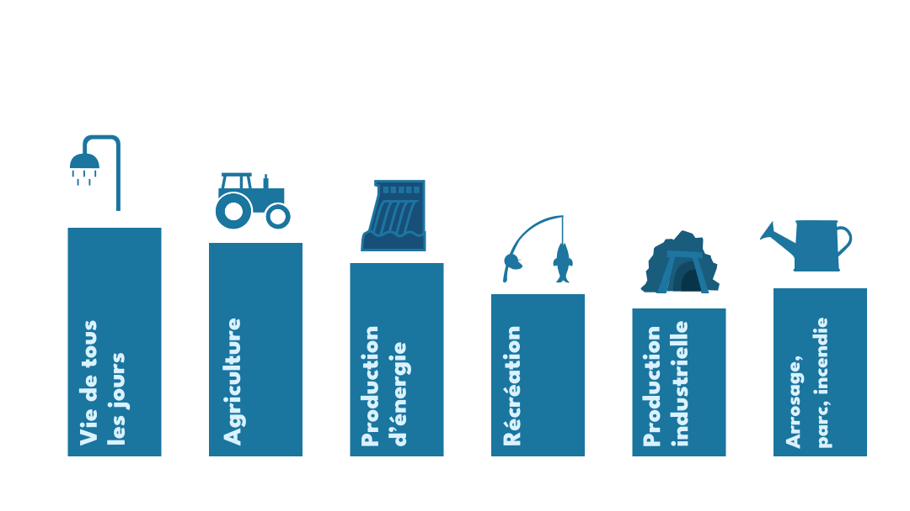
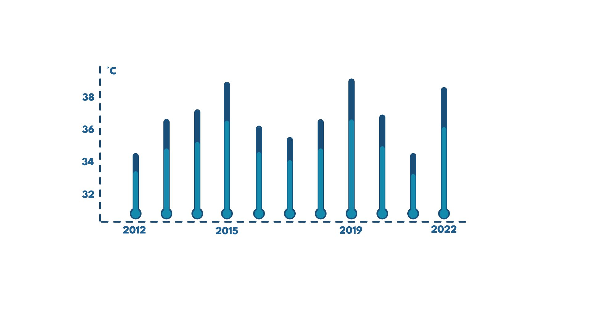

Quels sont les usages de l'eau en France ?
Comment adopter un comportement responsable et durable ?
Il est important de préserver la ressource en eau pour assurer la sécurité alimentaire, la santé humaine, la protection de l'environnement, la préservation des activités économiques et la stabilité sociale.
Quelles sont les menaces qui pèsent sur la ressource en eau ?
Destruction des habitats aquatiques
Les dechets
Les sacs en plastique
Pourquoi faut-il préserver la ressource en eau ?
Il est important de préserver la ressource en eau pour assurer la sécurité alimentaire, la santé humaine, la protection de l'environnement, la préservation des activités économiques et la stabilité sociale.
Et avec des chiffres ?
Évolution de la température maximale de 2012 à 2022 à
Strasbourg

Evolution des écoulemécoulements des cours dans le Bas-Rhin entre 2012 et 2022
Les changements des températures et des précipitations ont un impact
sur l'assèchement des cours d'eau dans le Bas-Rhin. Les données
montrent une tendance à la hausse des températures moyennes annuelles,
ainsi qu'une augmentation des précipitations intenses et des
sécheresses prolongées. Cela peut entraîner des changements dans le
régime hydrologique des cours d'eau. Pour prévenir l'évolution de ces
problèmes, il est essentiel de mettre en place des mesures de gestion
intégrée des ressources en eau qui visent à améliorer la disponibilité
de l'eau pour les usages humains, agricoles et industriels, tout en
protégeant les écosystèmes aquatiques.
Pour prévenir l'évolution des problèmes liés à l'assèchement des cours
d'eau dans le Bas-Rhin, il est nécessaire de prendre des mesures pour
réduire les effets des changements climatiques sur les ressources en
eau et d'améliorer la gestion des ressources en eau pour préserver les
écosystèmes aquatiques.